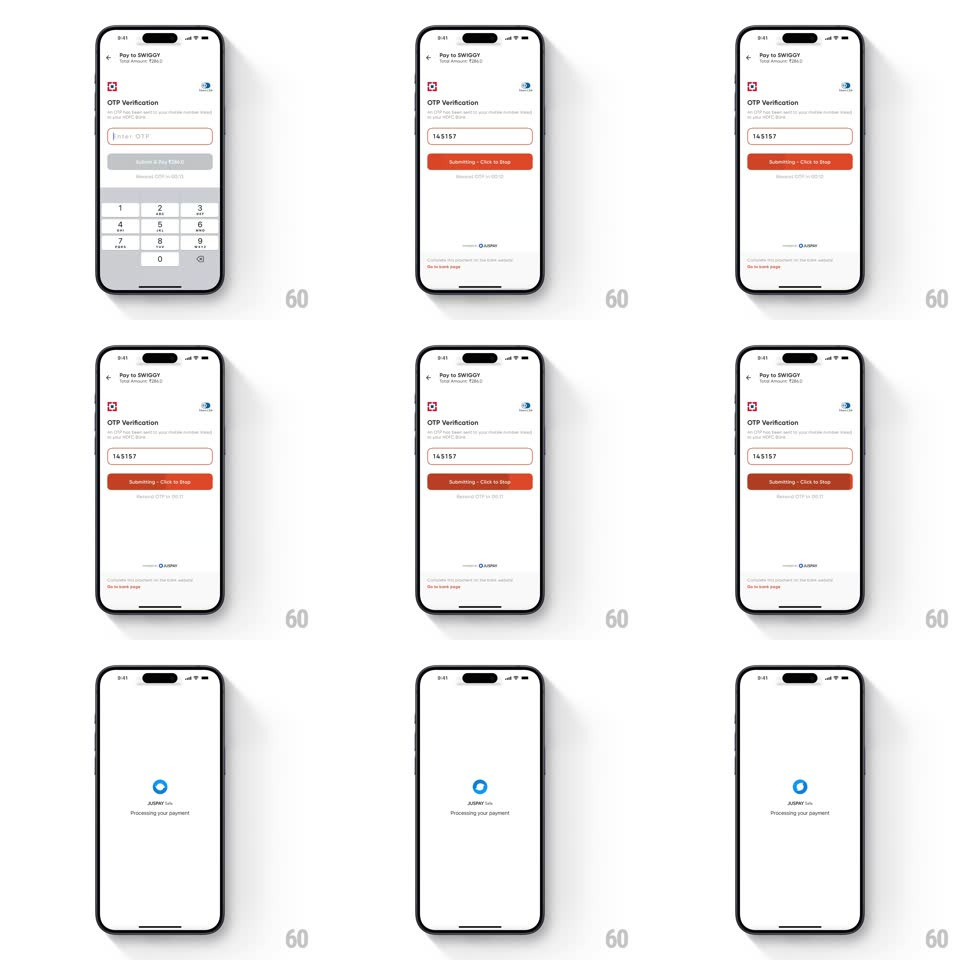

Media
Frame-by-frame

Rebuild this interaction 1:1: Swiggy's Juspay OTP auto-submit - once the last OTP digit lands, the pay button transforms into an orange "Submitting - Click to Stop" progress bar that fills over a few seconds, cancellable, before the screen transitions to "Processing your payment".

Rebuild this interaction 1:1: Swiggy's Juspay OTP auto-submit - once the last OTP digit lands, the pay button transforms into an orange "Submitting - Click to Stop" progress bar that fills over a few seconds, cancellable, before the screen transitions to "Processing your payment". ## Integration Integration: stack-agnostic spec - springs given as stiffness/damping, timed motions as duration + curve; map every value to your framework and animation library of choice. ## Scene A "Pay to SWIGGY" OTP verification screen: bank icons, an OTP field, a number pad, and a submit button; the end state is a minimal white screen with a blue circular spinner and "Processing your payment". ## Motion spec Pattern: button-to-progress-bar transform with cancel window, ~3s fill. - Auto-trigger: on the final OTP digit, the keypad dismisses (250ms slide down) and the submit button morphs: its label swaps to "Submitting - Click to Stop" and a fill layer starts sweeping left to right (300ms crossfade into the new state). - Fill: the orange progress fill sweeps the button over ~2.5s (linear); the button stays fully tappable - tapping cancels and restores the original submit button (250ms). - Commit: when the fill completes, the screen crossfades (300ms) to the processing state; the blue spinner ring rotates (1s per revolution, linear) under "Processing your payment". ## Calibration - The fill rate is linear and honest to the actual cancel window. - Cancel is available for the entire fill - the affordance never disappears early. ## Reduced motion Fill still runs (it communicates the cancel window); spinner becomes static. ## Don't miss - No tap needed on submit - entry of the last digit starts the sequence. - The button's geometry stays identical through the morph; only its contents change.